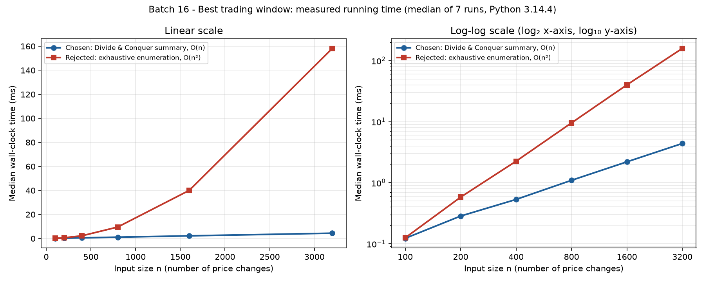

Divide and Conquer with a composable four-field summary
Problem. A brokerage stores net price changes for one stock across 8 servers, each holding a contiguous date range (25 years of minute ticks, about 2.4 × 106 values). Find the contiguous window with the maximum total gain.
Sankar S V · PSG College of Technology · Odd Semester 2026–27
Objective: choose 1 ≤ i ≤ j ≤ n to maximise
G(i, j) = A[i] + A[i+1] + … + A[j]
Output: the best sum and its window. Answer: ₹14 on days 3–8.
Scale: n ≈ 2.4 × 106, split into 8 contiguous blocks of about 300,000 values.
| Decision | Choice |
|---|---|
| Window | Non-empty (all-negative data → best single tick) |
| Empty input | Rejected with an error |
| Ties | Max sum → earliest start → earliest end |
| Indexing | 1-based in report and output, 0-based inside the code |
| Distributed need | Each server's result must be composable without shipping its ticks |
Cut the range anywhere. Every window of L · R is exactly one of three kinds:
entirely in L
entirely in R
suffix of L + prefix of R
Each half can be described by a constant-size summary, and two adjacent summaries merge in O(1).
The merge is associative, so any balanced merge tree works, provided left-to-right order is kept.
The same summary serves 8 servers, a segment tree and a disjoint sparse table.
We do not claim D&C beats Kadane's O(n) sequentially. The gain is composability.
S = (total, prefix, suffix, best)
| Field | Meaning (non-empty) |
|---|---|
| total | sum of the whole segment |
| prefix | best sum starting at the left edge |
| suffix | best sum ending at the right edge |
| best | best window anywhere |
Leaf: S(x) = (x, x, x, x)
Plus metadata kept separate: prefix_end, suffix_start, best_start, best_end (for reconstructing windows).
The bold term is the best crossing window.
Sequential recursion: T(n) = 2T(n/2) + Θ(1) = Θ(n), with O(log n) stack.
| Level | Summaries (total, prefix, suffix, best) · best window |
|---|---|
| 0 · leaves | S(x) = (x, x, x, x) for 3, −5, 8, −2, 6, −9, 4, 7, −3, −6, 5, 2 |
| 1 · pairs | [1,2] (−2, 3, −2, 3) · [3,4] (6, 8, 6, 8) · [5,6] (−3, 6, −3, 6) · [7,8] (11, 11, 11, 11) · [9,10] (−9, −3, −6, −3) · [11,12] (7, 7, 7, 7) |
| 2 · fours | [1,4] (4, 6, 6, 8) best [3,3] · [5,8] (8, 8, 11, 11) best [7,8] · [9,12] (−2, −2, 7, 7) best [11,12] |
| 3 · eight | [1,8] = merge([1,4], [5,8]) → (12, 12, 14, 14) · [9,12] carried unchanged |
| 4 · root | [1,12] = merge([1,8], [9,12]) → (10, 12, 12, 14) · best window [3, 8] |
best = max(8, 11, 6 + 8 = 14) = 14
prefix = max(6, 4 + 8 = 12) = 12
suffix = max(11, 8 + 6 = 14) = 14
The suffix of [1,4] is A[3..4] = 6, and the prefix of [5,8] is the whole block, 8. Together they cross the boundary.
₹14 on days 3 → 8
8 − 2 + 6 − 9 + 4 + 7 = 14
At the root, the crossing candidate is 14 + (−2) = 12 and the right block's best is 7, so the left 14 survives. The program output matches.
| Quantity | Cost (p servers) |
|---|---|
| Local work per server | Θ(n/p) |
| Total work | Θ(n) + Θ(p) = Θ(n) |
| Coordinator merges | p − 1 = 7, each O(1) |
| Merge depth | ⌈log₂ p⌉ = 3 rounds |
| Communication | p records of O(1) size, i.e. 64 integers |
| Ideal parallel time | O(n/p + log p) |
Assumes balanced blocks, one core per server, data already local, and network or synchronisation cost negligible (or modelled separately). On one machine our simulation shows correctness, not speedup. No cluster timings are claimed.
| Aspect | Kadane scan | D&C summary |
|---|---|---|
| Time | Θ(n) | Θ(n) total work |
| Extra space | O(1) | O(log n) stack |
| Constant factor | smaller | 2n − 1 calls, 8-field records |
| Parallelism | sequential (E[i] needs E[i−1]) | independent blocks, O(n/p + log p) |
| Composability | no | associative O(1) merge |
| Range queries | rescan [L, R] | segment tree node value |
| Point updates | rescan | O(log n) with a segment tree |
one machine, one full scan or a few queries: same Θ(n), less memory, smaller constants.
data is already partitioned, or many range queries and updates reuse the summary.
Recursion depth for n = 2.4 × 106 is 23 frames. The 2n − 1 calls happen over time, not on the stack at once. Network latency per round can erase the benefit of extra servers, so there is no automatic 8× speedup.
| Structure | Build | Query | Point update | Space | At n ≈ 2.4 × 106 |
|---|---|---|---|---|---|
| Direct scan (Kadane on [L, R]) | O(1) | O(R − L + 1) | O(1) | O(1) | Fine for a few queries, but each long query costs millions of steps |
| Segment tree of summaries | O(n) | O(log n), ≈ 22 levels | O(log n) | O(n) | Recommended: frequent queries plus occasional corrections |
| Disjoint sparse table | O(n log n) | O(1) merges | rebuild | O(n log n) | Only for frozen history with huge query volume |
The merge is associative but not commutative. Queries must combine pieces left to right.
The overlapping trick relies on min(x, x) = x. Our merge is not idempotent, so overlap would double-count ticks. The disjoint variant uses one ordered merge of two disjoint pieces.
All three are implemented and tested against direct scans on every (L, R) pair of random arrays. Memory is discussed asymptotically and was not measured.
| Technique | Concrete evidence | Verdict |
|---|---|---|
| Greedy | Rule "never bridge a negative": on [5, −1, −1, −1, 5] it returns 5, but the optimum is the whole array, 7. Refutes that rule, not every greedy idea. | rule is wrong |
| Dynamic Programming | Kadane, E[i] = max(A[i], E[i−1] + A[i]), is a correct O(n) DP. Its state depends on everything to the left, so it is not a self-contained segment value for servers or tree nodes. | correct not the primary architecture |
| Backtracking | Search space n(n+1)/2. At n = 2.4 × 106 that is 2,880,001,200,000 windows, about 6 × 105 times the ≈ 4.8 × 106 steps of a linear method. | Θ(n²) benchmarked baseline |
| Branch & Bound | Pruning needs a sound and tight bound. With signed data, "current + all remaining positives" is far too optimistic, so little is pruned and the search stays Θ(n²) in the worst case. Tight bounds are the prefix and suffix summaries themselves. | no effective bound |
The 4-field summary stores one window per segment, so it cannot represent pairs. Extending the state would work, but a prefix/suffix DP is simpler to prove.
P[i] = best window in A[1..i] (forward Kadane)
Q[i] = best window in A[i..n] (backward Kadane)
answer = max( P[n], maxi<n P[i] + Q[i+1] )
Every pair [a,b], [c,d] with b < c is counted at split i = b. A single window covers the "at most" case. For n = 1 the answer is A[1].
Time O(n), space O(n). For up to k windows, a DP runs in O(kn) time with O(k) state.
₹23 = [3,5] (12) + [7,8] (11)
That is ₹9 more than the single window, because the pair skips the −9 on day 6.
Tested against exhaustive enumeration of all windows and disjoint pairs (600 random arrays). In a distributed setting, use a parallel prefix/suffix scan or an extended associative summary.

Measured with CPython 3.14.4 on Windows 11. Median of 7 runs after a warm-up, GC paused, same seeded input for both algorithms. Answers are asserted equal before timing.
| n | D&C (ms) | Exhaustive (ms) |
|---|
Doubling n: about ×2 for D&C and about ×4 for exhaustive search.
24 / 24 unit tests pass (given instance, edge cases, ties, 2,000 random brute-force checks, associativity, segment tree, sparse table, two windows).
{{LARGE_NOTE}}
Map on local splits, then reduce: the same shape as local summaries plus a coordinator merge. Difference: our reduce is order-sensitive (associative, not commutative), and we only simulate the servers.
research.google/pubs/mapreduce-simplified-data-processing-on-large-clusters
"Finding subsegments with the maximal sum": the same (sum, prefix, suffix, answer) node.
cp-algorithms.com/data_structures/segment_tree.html